بسم الله الرحمن الرحيم
الـTimer هو كلاس بالجافا من مكتبة swing بيتم استدعائه كالتالي..
import javax.swing.Timer;
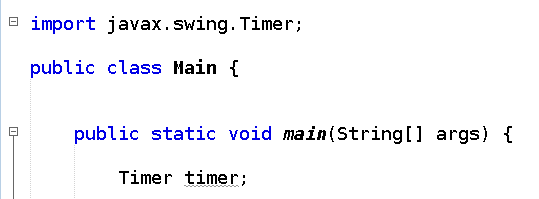
لاستخدام الـTimer يجب أن نعطيه متغيرين لعمل object منه (Timer) جديد.
Timer timer = new Timer(1,2);
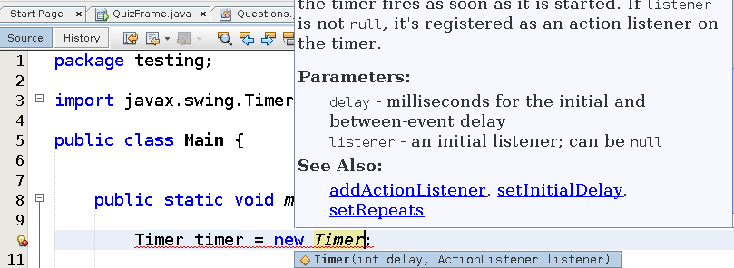
1- المدخل الأول سيكون الوقت الذي ينتظره المؤقت (Timer) قبل تنفيذ method محددة.
(الوقت بالملي أي كل 1000 يساوي ثانية واحدة).
2- المدخل عبارة عن object من نوع ActionListener وهو عبارة عن object يحتوي على دالة باسم actionPerfomed والتي سيتم تنفيذها كُلَ عدد من الثواني بحسب العدد المدخل في الفرع رقم (1).
مثال :

والآن علينا تشغيل الـTimer وتحديد متى يعمل , أبسط طريقة لتشغيل باستخدام دالة start.
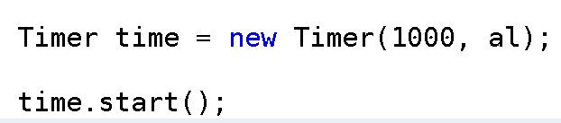
وهكذا نحصل على عداد يطبع الرقم بالزيادة
(ملاحظة تم استخدام scanner لتثبيت الشاشة ولا أهمية لذلك في الواجهات)
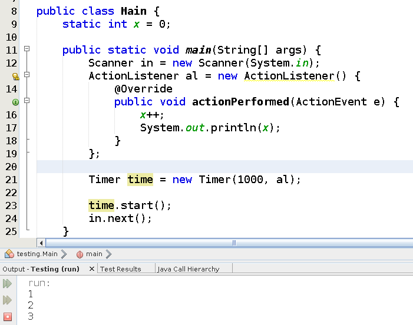
والآن نريد أن نصمم Timer بحيث ينقص الوقت في Label معينة تحتوي على الوقت بصيغة "00:00:00”.
نبدأ بتصميم الواجهة (اسم الlabel التي ستحتوي على الوقت والمحددة بالصورة سيكون jLabel2)
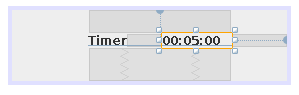
نقوم بعمل Timer في الـConstructor الخاص بالكلاس مباشرة , كالتالي.
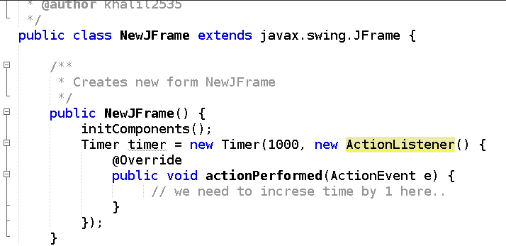
والآن سنقوم بعمل دالة بحيث عندما يتم استدعاؤها تقوم بتنقيص الوقت الموجود في jLabel2 لثانية واحدة ليتم استدعاؤها بداخل الـTimer في كل ثانية..
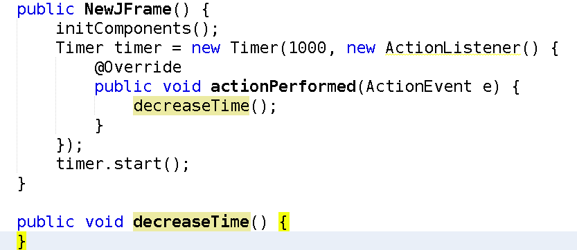
بقي علينا أن ننقوم بشرح محتويات الدالة لتنقيص 1 إلى عدد الثواني في كل مرة.
أولاً علينا الحصول على الوقت الموجود (حتى نتمكن من الزيادة) ويمكن أخذ الثواني والدقائق والساعات من الـlabel من خلال دالة getText ,ثم سيكون مكان الساعات في أول خانتين ثم نتجاهل الخانة الثالثة التي ستحتوي على ":” ثم الدقائق في الخانتين التاليتين ثم نتجاهل خانة ":” وأخيراً الثواني في آخر خانتين ,انظر للكود التالي..
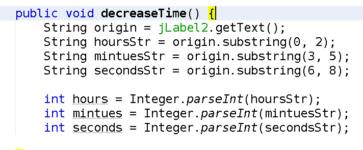
الآن نريد القيام بتنقيص الثواني ليعمل العداد كما هو مطلوب, عن طريق (--seconds) لكن هذا في حالة لم تكن عدد الثواني 0 لأنه عندنا يكون عدد الثواني يساوي 0 عند النقصان سيتم التنقيص من عدد الدقائق بقيمة 1 وسيعود عدد الثواني إلى رقم 59 ,كيف ينقص عدد الدقائق ؟
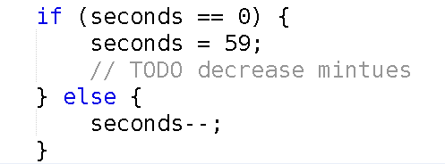
نقوم بتنقيص عدد الدقائق من خلال (--mintues), لكن هذا في كل الأحوال إلا إذا كان عدد الدقائق 0 فإننا نرجع عدد الدقائق لـ59 وننقص عدد الساعات بـ1.
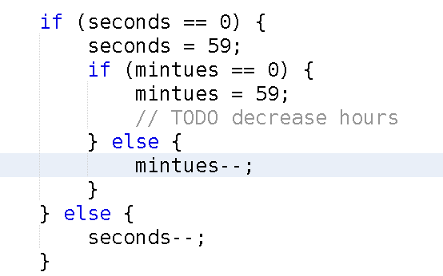
ونقوم بزيادة عدد الساعات بنفس الطريقة ولكن لو أصبح عدد الساعات يساوي صفر لا نقوم بإرجاعه في حالة أصبح 12 أو أكثر لأن العداد الذي لدينا لا يحتوي على عدد للأيام أو الأسابيع أو الشهور.
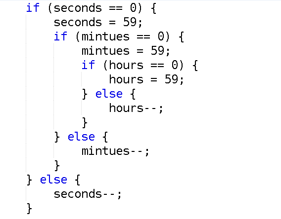
والآن نريد أن نعيد القيم second , mintues , hours إلى نصوص حتى نتكمن من وضعها في الـjLabel2 كما كانت , لكن هناك مشكلة وهي أن الرقم لو كان 1 فإننا عندما نحوله إلى نص لا يصبح 01 بشكل تلقائي , لنظهره كخانتين يجب علينا استخدام String.format والتي تعمل كدالة printf إلا أنا لا تطبع النتيجة بل ترجعها كنص ونعطيه format معينة وهي "%02d” ليصبح الرقم في خانتين.
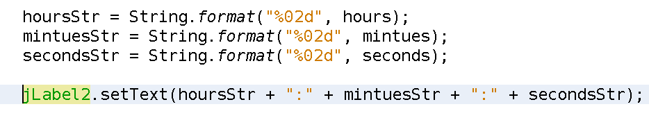
ولا ننسى استخدام دالة start والتي ستبدأ بتشغيل الـtimer..
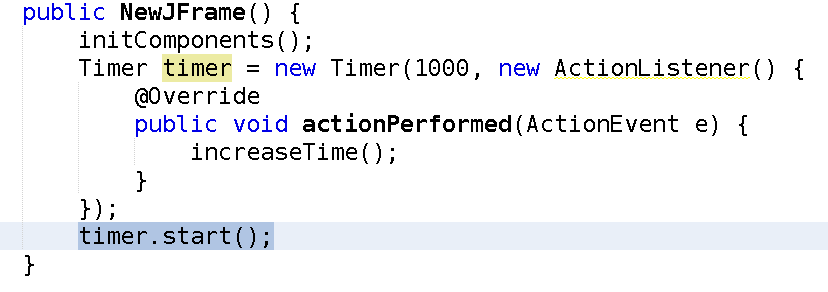
وإذا أردنا أن نقوم بوظيفة معينة ونعيد المؤقت للقيمة "00:05:00” (5 دقائق مثلاً) فإننا نقوم بفحص الوقت داخل الدالة decreaseTime باستخدام المتغيرات seconds , mintues , hours ونقوم بالوظيفة في حالة توفر الشرط كما يظهر بالصورة..
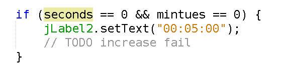
للمزيد قم بالرجوع للصفحة الرئيسية
والسلام عليكم ورحمة الله وبركاته
لا تنسونا من صالح دعائكم